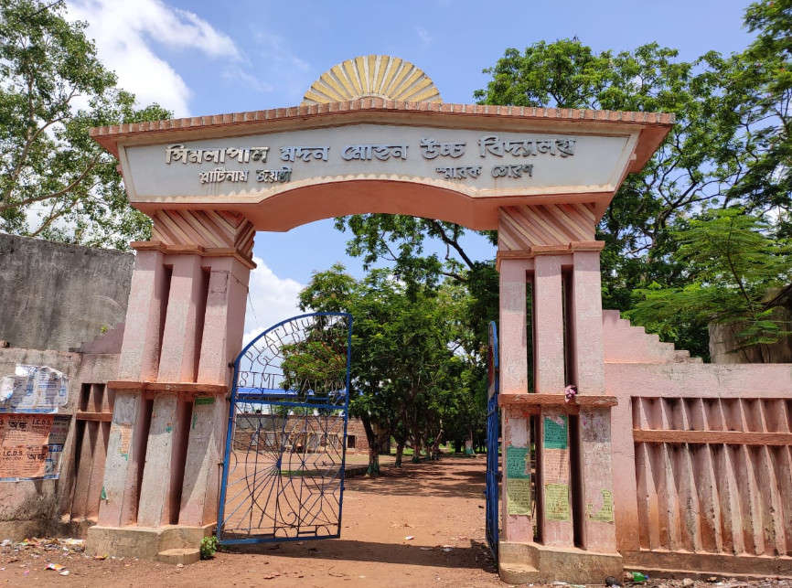
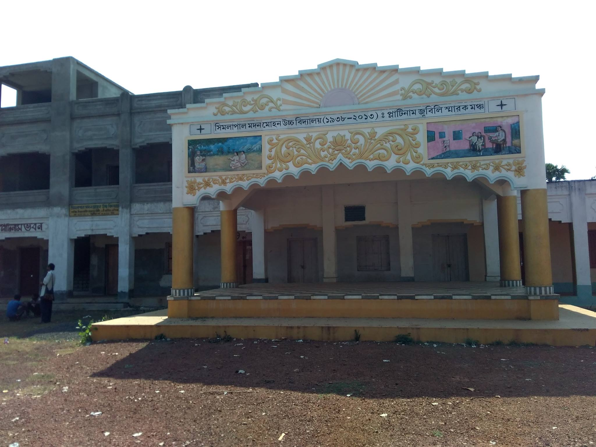
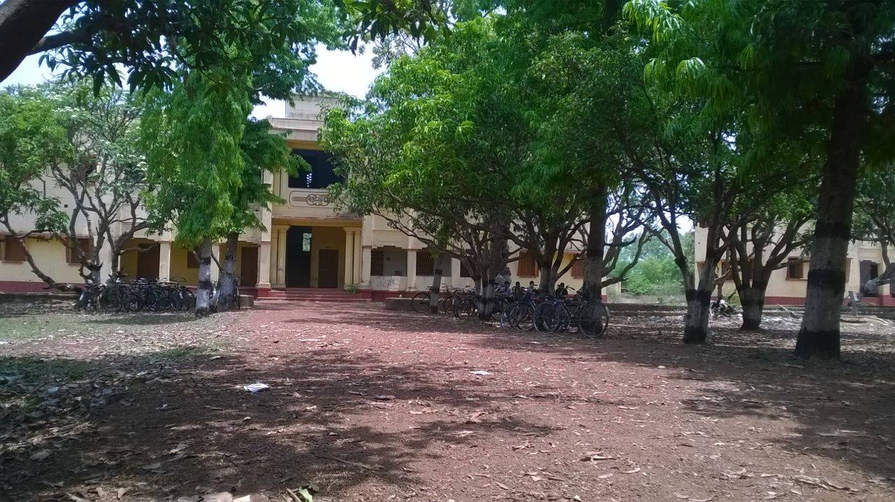

This page consisits of some datas on Simlapal.M.M. High School (SMMHS) located at Simlapal,Bankura,West Bengal. 
Simlapal M M High School in Bankura. Simlapal M M High School with Address, Contact Number, Photos, Maps. View Simlapal M M High School, Bankura on Justdial. This Schools takes pride in the holistic and innovative learning methods which have helped them raise the bar in the field of education. The centre follows a well-researched curriculum that is based on the play way method of learning. This school offers education for children in different age groups. There are a host of other supplementary activities that chilifradren can enroll in to enhance their skill set. Undoubtedly it is one of the best Schools in Simlapal, Bankura. 
There are 191 inhabited villages in the Simlapal CD block, as per the District Census Handbook, Bankura, 2011. 100% villages have power supply. 189 villages (98.95%) have drinking water supply. 22 villages (11.52%) have post offices. 164 villages (85.86%) have telephones (including landlines, public call offices and mobile phones). 62 villages (32.46%) have pucca (paved) approach roads and 65 villages (34.03%) have transport communication (includes bus service, rail facility and navigable waterways). 10 villages (5.24%) have agricultural credit societies and 6 villages (3.14%) have banks.[28]
There were 59 fertiliser depots, 18 seed stores and 48 fair price shops in the CD block.[29] In 2013-14, persons engaged in agriculture in Simlapal CD block could be classified as follows: bargadars 5.62%, patta (document) holders 17.78%, small farmers (possessing land between 1 and 2 hectares) 5.85%, marginal farmers (possessing land up to 1 hectare) 18.27% and agricultural labourers 52.48%.[29] In 2003-04 net area sown Simlapal CD block was 11,282 hectares and the area in which more than one crop was grown was 10,075 hectares.[30] In 2013-14, the total area irrigated in Simlapal CD block was 19,144 hectares, out of which 11,853 hectares was by canal water, 1,790 hectares by tank water, 1,120 hectares by river lift irrigation, 116 hectares by deep tubewell, 2,400 hectares by shallow tubewell, 45 hectares by open dug wells and 1,820 hectares by other methods.[29] In 2013-14, Simlapal CD block produced 99,087 tonnes of Aman paddy, the main winter crop, from 34,047 hectares, 181 tonnes of Aus paddy from 65 hectares, 3,290 tonnes of Boro paddy from 1,239 hectares, 237 tonnes of wheat from 105 hectares and 40,671,000 tonnes of potatoes from 2,214 hectares. It also produced maize, pulses and mustard. 
In 2013-14, Simlapal CD block had 10 originating/ terminating bus routes. The nearest railway station is 42 km from the CD block headquarters.[29] State Highway 2 running from Bankura to Malancha (in North 24 Parganas district) and State Highway 9 running from Durgapur (in Paschim Bardhaman district) to Nayagram (in Jhargram district) pass through this CD block.
In 2014, Simlapal CD block had 1 rural hospital and 3 primary health centres with total 50 beds and 8 doctors. It had 21 family welfare sub centres and 1 family welfare centre. 7,419 patients were treated indoor and 153,615 patients were treated outdoor in the hospitals, health centres and subcentres of the CD block.[38] Simlapal Rural Hospital, with 30 beds at Simlapal, is the major government medical facility in the Simlapal CD block. There are primary health centres at Hatibari (Bon Dubrajpur) (with 4 beds), Lakshmisagar (Rasikpur) (with 10 beds), Arrah (with 6 beds).
In the Simlapal CD block in 2011, among the class of total workers, cultivators numbered 12,062 and formed 20.82%, agricultural labourers numbered 30,773 and formed 53.10%, household industry workers numbered 2,726 and formed 4.70% and other workers numbered 12,387 and formed 21.38%.[25]Total workers numbered 57,948 and formed 40.51% of the total population, and non-workers numbered 85,090 and formed 59.49% of the population. In the census records a person is considered a cultivator, if the person is engaged in cultivation/ supervision of land owned by self/government/institution. When a person who works on another person's land for wages in cash or kind or share, is regarded as an agricultural labourer. Household industry is defined as an industry conducted by one or more members of the family within the household or village, and one that does not qualify for registration as a factory under the Factories Act. Other workers are persons engaged in some economic activity other than cultivators, agricultural labourers and household workers. It includes factory, mining, plantation, transport and office workers, those engaged in business and commerce, teachers, entertainment artistes and so on.